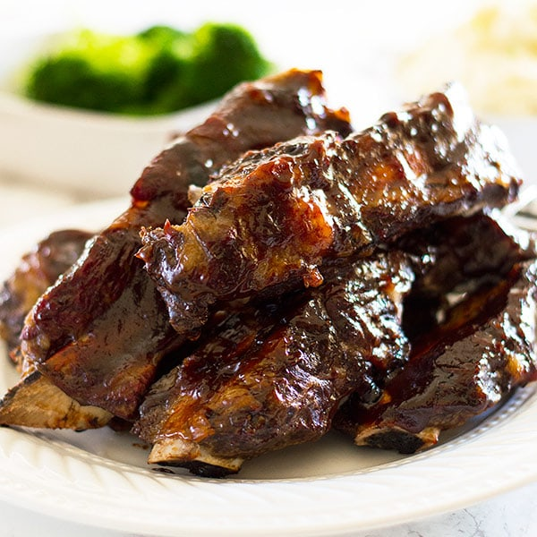

Oven Beef Ribs

Description
Oven beef ribs are cooked low and slow then basted in sticky, tangy barbecue sauce. When you slow bake beef ribs in the oven, you’re left with incredibly tender and succulent beef – and they couldn’t be easier to make.
Ingredients & Items needed
- 2 pounds beef chuck riblets
- 1/2 Tablespoon salt
- 1/2 Tablespoon pepper
- 1 teaspoon minced garlic
- 2 Tablespoons olive oil
- Barbecue sauce
- Baking sheet
- Basting brush
- Aliminum foil
Steps
- Bring beef ribs to room temperature. Rinse beef and pat dry with paper towels.
- Preheat oven to 275 F.
- Mix salt, pepper, garlic, and olive oil together and coat both sides of the ribs.
- Line a baking sheet with aluminum foil.
- Place ribs on foil lined sheet and cover with foil, seal securely.
- Bake covered for 3.5 hours and check for tenderness. If they are to your liking, remove from oven. You can continue cooking for up to another 30 minutes or an hour.
- Remove from oven and drain excess fat.
- Turn oven temp up to broil.
- Brush on your favorite barbecue sauce and broil 2-3 minutes or until sauce caramelizes. Watch carefully, this happens quickly!
- Remove ribs from oven, let rest 5 minutes.